flowchart LR subgraph DW[Data Wrangling] direction LR A(Importar) --> B(Ordenar) B --> C(Transformar) end subgraph EDA["Exploratory Data Analysis (EDA)"] direction RL C2(Transformar) --> D(Visualizar) D --> C2 end subgraph MO[Modeling] direction RL E(Modelar) --> F(Evaluar) F --> E end subgraph CO[Communicate] G(comunicar) end DW --> EDA EDA --> MO MO --> EDA MO --> CO
Ciencia de Datos
Presentación
Descripción del curso
El curso de ciencia de datos presenta una introducción a la teoría e implementación de métodos estadísticos para el análisis de datos. Se hace énfasis en los modelos predictivos que buscan aproximar una variable de interés \(Y\) (métodos supervisados) en términos de un conjunto de variables predictoras \((\textbf{X})\), usando una función f que debe ser aprendida a través de un conjunto de datos \((x_i, y_i)\ i=1,2,...,n\).

Se estudian las bases conceptuales y matemáticas de los modelos y se evalúan a partir de sus propiedades estadísticas y capacidad de predecir la variable \(Y\). Se estudia también la parte práctica de los temas mediante la aplicación y validación de los métodos en bases de datos sintéticas y reales, usando el lenguaje R como software estadístico y de programación.
La ciencia de datos requiere de disciplinas y habilidades diversas, pero puede resumirse en 3 grandes aspectos (Figura 1):
- Conocimiento en estadística y modelos matemáticos
- Manejo de algoritmos y lenguajes de programación
- Experticia en algún campo específico de aplicación
El objetivo principal de este curso es desarrollar de manera formal, pero sin exceso en la teoría matemática, los modelos estadísticos en ciencia de datos. Las habilidades de programación y conocimientos básicos en los campos de aplicación se desarrollarán en la medida de lo necesario.
Resolver problemas de ciencia de datos no es un proceso lineal, pero sí se puede enmarcar en una serie de etapas que ayudan a desarrollar de manera consistente el trabajo o flujo de trabajo.
En la Figura 2.1 se muestra un esquema de este proceso sistemático. La primera etapa se conoce como disputa de datos (data wrangling)1 y consiste en la obtención y puesta a punto de los datos que se van a utilizar. Esta fase requiere importar, ordenar y transformar los datos, y necesita habilidades específicas en manejo de bases de datos. Las personas con alta especialización en esta área se conocen somo Ingenieros de Datos (Data Engineers).
La segunda fase es el análisis exploratorio de datos (Exploratory Data Analysis (EDA)) y consiste principalmente en la visualización a través de tablas, resúmenes y gráficas de la información que se tiene en las bases de datos que han sido previamente organizadas. Esta fase puede requerir iterar entre los procesos de transformación y visualización. No todos los problemas de ciencia de datos requieren de técnicas de machine learning y muchos de estos problemas pueden resolverse en esta fase. Las personas que se especializan en esta área se conocen como Analistas de Datos (Data Analysts).
La tercera fase (y la que más desarrollaremos en este curso) es la Modelación y se trata de aplicar modelos estadísticos y de machine learning para obtener ideas e información a partir de los datos. Este proceso también es iterativo y puede requerir aplicar varios tipos de modelos, evaluarlos y compararlos para obtener buenos resultados. Los especialistas en esta área son los Científicos de Datos (Data Scientists).
La última fase del proceso es la comunicación de los resultados y hallazgos. Es importante aprender a presentar los resultados y veremos algunas herramientas básicas para lograrlo.
Recursos bibliógraficos
Hay muchos (muchísimos) recursos disponibles para apoyar este curso. Es fundamental usar lenguajes de programación y en este caso usaremos R, cualquier curso online, libro o tutorial puede servir para aprender los conceptos básicos, el estudiante es libre de escoger y aprender (si aún no sabe) R de una fuente de su preferencia.
El libro principal para los conceptos estadísticos será James et al. (2021), ya que maneja un buen balance entre aplicaciones y teoría para el bagaje matemático que se espera de los estudiantes. Este libro también trae código y aplicaciones en R, pero hay mejores fuentes en este aspecto.
Otros 2 libros interesantes para la parte conceptual y teórica son (Irizarry, s. f.; Huang y Deng, s. f.), un poco menos desarrollados en lo conceptual con respecto a (James et al. 2021) pero a cambio traen más y mejor código para aplicaciones usando R.
El libro de (Wickham, Çetinkaya-Rundel, y Grolemund, s. f.) es excelente para aprender a hacer ciencia de datos en R, sobre todo en la parte de análisis exploratorio de datos, tiene muchos ejemplos y código muy bien escrito. Su desventaja2 es la falta de modelos estadísticos.
Un libro que requiere algo más de madurez matemática que (James et al. 2021) es (Hastie, Tibshirani, y Friedman 2009), aunque no se usará como referencia principal, es útil para profundizar en algunos temas importantes. De igual manera, se pueden consultar las notas disponibles en línea de 2 cursos de estadística no paramétrica (García-Portugués, s. f.a) y modelos predictivos (García-Portugués, s. f.b).
Los libros (Alexander 2023; K. Healy 2018; Kabacoff, s. f.) son excelentes referencias para profundizar en aspectos de visualización de datos usando R. También se pueden encontrar toda una serie de recursos valiosos en la web, como (Emaasit, s. f.; C. Healy y Holtz, s. f.; Holtz, s. f.).
Los libros (James et al. 2021; Hastie, Tibshirani, y Friedman 2009) pueden obtenerse de las bases de datos de la universidad. Los libros (Irizarry, s. f.; Huang y Deng, s. f.; Wickham, Çetinkaya-Rundel, y Grolemund, s. f.; García-Portugués, s. f.a, s. f.b; Alexander 2023; K. Healy 2018; Kabacoff, s. f.) están disponibles en la web y son de libre acceso.
Saberes previos
Para un óptimo desarrollo de los contenidos del curso, se espera que los estudiantes tengan habilidades básicas en programación algorítmica con cualquier lenguaje. Se usará R pero la experiencia en cualquier otro lenguaje es suficiente para aprender rápidamente las herramientas necesarias.
De igual forma es necesario el manejo de conceptos matemáticos de funciones, derivadas y optimización en una y varias variables tal como se ve en los cursos de cálculo; conceptos de variables aleatorias, estimadores, intervalos de confianza, pruebas de hipótesis y regresión lineal de los cursos de Probabilidad y Estadística y Modelos de Regresión y Series de Tiempo. Es recomendable que el estudiante se sienta cómodo en la manipulación de matrices y sistemas de ecuaciones lineales como se ve en el curso de Álbegra Lineal.
Objetivos
Comprender la teoría y los conceptos en los que se fundamentan los métodos estudiados
Identificar problemas en los que se puedan aplicar de forma adecuada modelos predictivos de ciencia de datos
Adquirir pericia en las diferentes fases de la ciencia de datos: importación, organización, transformación, visualización, modelación y comunicación
Aplicar en problemas reales los conceptos aprendidos, mediante el uso de lenguajes de programación y bases de datos
Analizar y comunicar de manera clara los resultados de la aplicación de modelos estadísticos en bases de datos
Metodología
El contenido del curso será presentado en sesiones presenciales los días martes a las 8:00 am y miércoles a las 4:00 pm. Durante las clases se irán desarrollando de manera simultánea conceptos y código en R, por lo que es necesario estar en salas de informática.
El estudiante es responsable de trabajar semanalmente en el curso para afianzar los temas dados. se realizarán exámenes cortos3 periódicamente para evaluar la evolución de cada estudiante en la asimilación de los temas. Se dejarán talleres/tareas para estimular la investigación y profundización de los temas vistos durante las clases.
Plan de trabajo por semana
| Semana | Inicio | Temas |
|---|---|---|
| 1 | julio 17 | Introducción al curso. Fundamentos de R para el análisis de datos |
| 2 | julio 24 | Análisis exploratorio, parte I |
| 3 | julio 31 | Análisis exploratorio, parte II |
| 4 | agosto 07 | Función de pérdida. Medidas de la calidad de un modelo. Sesgo y varianza |
| 5 | agosto 14 | Regresión lineal. Parte I. Examen 1 |
| 6 | agosto 21 | Regresión lineal. Parte II |
| 7 | agosto 28 | Modelos lineales de clasificación. Análisis discriminante lineal |
| 8 | septiembre 04 | Regresión logística |
| 9 | septiembre 11 | Validación cruzada (CV) |
| 10 | septiembre 18 | Métodos de regularización. Ridge y Lasso. Examen 2 |
| 11 | septiembre 25 | Reducción de la dimensión. Componentes principales |
| 12 | octubre 02 | Modelos no lineales de regresión. Regresión polinómica y en bases funcionales |
| 13 | octubre 09 | Splines, Smoothing splines |
| 14 | octubre 16 | Métodos basados en árboles. Parte I Examen 3 |
| 15 | octubre 23 | Métodos basados en árboles. Parte II |
| 16 | octubre 30 | Breve introducción a temas adicionales: Máquinas de Soporte Vectorial, Redes Neuronales |
Evaluación
La nota final se calculará como el promedio de 4 cortes de igual ponderación (25%). Cada corte tendrá los siguientes componentes:
| Cortes | Componentes |
|---|---|
| Primer corte (25%) | Evaluaciones de Seguimiento, quices, talleres, exposiciones, trabajos (12%) Asistencia (puntualidad), Participación en clase (2%) Evaluación parcial (11%) |
| Segundo corte (25%) | Evaluaciones de Seguimiento, quices, talleres, exposiciones, trabajos (12%) Asistencia (puntualidad), Participación en clase (2%) Evaluación parcial (11%) |
| Tercer corte (25%) | Evaluaciones de Seguimiento, quices, talleres, exposiciones, trabajos (12%) Asistencia (puntualidad), Participación en clase (2%) Evaluación parcial (11%) |
| Cuarto corte (25%) | Evaluaciones de Seguimiento, quices, talleres, exposiciones, trabajos (10%) Evaluación o proyecto final (15%) |
Sobre el Reglamento
- Es necesario que el estudiante participe como mínimo en el 80% del desarrollo del curso (clases). La inasistencia será causal de pérdida del curso con una calificación de cero punto cero cero (0.00), sin posibilidad de cancelación del curso, si la inasistencia fue reportada previamente al sistema de información.
- La inasistencia por razones de enfermedad o fuerza mayor deberá justificarse dentro de los tres (3) días hábiles siguientes al hecho. Cuando el estudiante requiera ausentarse para eventos académicos, científicos, culturales y deportivos, en representación de la Universidad, deberá reportar este hecho al profesor, como mínimo con ocho (8) días hábiles de anticipación.
- En cualquiera de las clases se pueden hacer actividades evaluativas de seguimiento (quices, talleres cortos, ejercicios en clase), con o sin programación previa.
- La no presentación de una evaluación en la fecha y hora fijada por el profesor conlleva una nota de 0.00 (cero punto cero cero).
- Cuando, por causas justificadas, no se puedan presentar las evaluaciones parciales o finales en las fechas establecidas por el docente, se podrán solicitar pruebas supletorias ante el director de la Facultad. Estas pruebas tendrán un costo y deberán ser solicitadas dentro de los tres (3) días hábiles siguientes a la programación de la prueba no presentada por el estudiante y, si es autorizada, deberá ser presentada dentro de los 10 días hábiles siguientes a su autorización.
- Los resultados de las evaluaciones deberán ser informados al estudiante, a más tardar, dentro de las dos (2) semanas siguientes a su presentación.
Algunos autores lo definen como una pelea con los datos↩︎
Desventaja en el sentido de que el libro no está pensado para hacer modelación por lo que tendremos que usar otras fuentes para esta parte↩︎
No es necesario que estas evaluaciones rápidas o quices sean programadas o avisadas con anticipación, pueden realizarse en cualquier clase y en cualquier momento de la clase. Si \(p_k\) es la probabilidad de haya quiz en la k-ésima clase, entonces \(p_k>0 \ \forall k\)↩︎